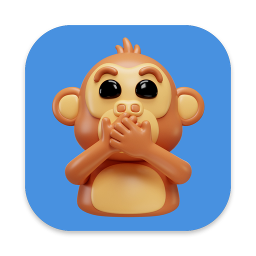
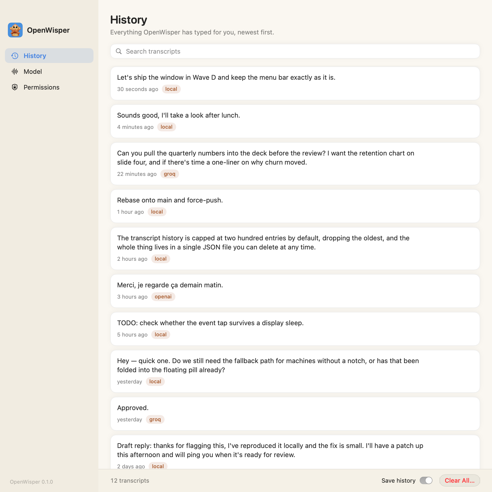

Hold a key, say what you mean, let go — and the words land wherever your cursor is, in any app. OpenWisper listens and transcribes on your own Mac, so it works with the Wi‑Fi off and your voice never goes anywhere.
Free & open source·macOS 14 or later·Apple Silicon

Why OpenWisper
Transcription happens on your Mac. No account, no subscription, no analytics — your voice is never uploaded and never saved to disk.
On a plane, in a dead spot, on hotel Wi‑Fi — it makes no difference. Everything it needs lives on your machine.
Ums, false starts and missing punctuation are tidied away, so what lands is what you meant to say — never a rewrite of it.
Mail, Slack, your browser, your notes — if you can put a cursor in it, you can talk into it. Nothing to switch to, nothing to copy.
Getting started
Open the file you downloaded and drag OpenWisper into your Applications folder.
OpenWisper lives in your menu bar — look for the little microphone at the top of the screen. On first launch it walks you through the three permissions macOS requires, and downloads its speech model with one click.
In any text field: hold the key, speak, let go. Your words appear right where your cursor is. Double-tap instead to dictate hands-free. On an external keyboard, use a different key — see below.
That message is expected the very first time, and the app is safe to open. OpenWisper is free software and isn’t registered with Apple’s paid developer program, so macOS is extra cautious with it.
On macOS 15 (Sequoia) or later: open System Settings → Privacy & Security, scroll to the bottom, and click Open Anyway next to OpenWisper. Confirm, and you’re in.
On macOS 14 (Sonoma): right-click OpenWisper in your Applications folder, choose Open, then click Open in the dialog.
You only ever do this once — after that it opens like any other app. Prefer to see exactly what you’re running? The full source code is on GitHub, and you can build it yourself.
On most non-Apple keyboards (Logitech and the like) the fn key is handled inside the keyboard itself, so your Mac — and OpenWisper — never sees it pressed. The fix: tell OpenWisper to listen for a second key as well, one your keyboard does report.
Click the menu bar microphone, choose Advanced Settings File, and change the hotkey section to list both keys:
"keys": ["fn", "rightCommand"]
Save the file and you’re done — fn keeps working on the built-in keyboard, and the right ⌘ command key starts dictation from the external one. Any key from the configuration reference works, including rightControl, rightOption and f13–f19.